Алёна хочет к Марсианам
Привет! Я Алёна и дизайнер. С уважением слежу за деятельностью Марсиан уже не первый год и, конечно, не могу пройти мимо вакансии.
Люблю изучать и применять новые технологии, наблюдать за деятельностью глобальных корпораций и читать всё подряд. Но больше всего люблю проектировать и дизайнить интерфейсы, чем последние 7 лет и занимаюсь. Сложные веб-сервисы для бизнеса, простые десктопные клиенты для государства, мобильные приложения на iOS и Android для людей, не говоря уже о лэндингах, баннерах и почтовых рассылках — профессиональное любопытство в моей крови 💉.
Последнее место работы
За прошедшие полтора года выстроила дизайн-экосистему вокруг лайф-трекера Healbe GoBe 2. Мозги русских ученых, американские инвестиции и производство в Китае породили магическое устройство на стыке hard и software. Браслет автоматически определяет, сколько калорий за день вы потребили, сильный ли стресс испытали и не обезвожен ли ваш организм. Человек вроде меня, одержимый промышленным дизайном, гаджетами и технологиями будущего, не смог пройти мимо.
Экосистема, состоящая из самого браслета, приложений под iOS и Android и личного кабинета на сайте, в каком-то виде существовала (для первого поколения устройств), но требовала немалой переработки. С маркетингом, почтовыми рассылками и прочими эмоциональными штучками было никак.
Как единственный продуктовый дизайнер в штате я занималась немалым пластом работ:
- Анализировала ситуацию на старте и в процессе: что мы имеем и что можем улучшить. Инструменты: Google Analytics, опросы пользователей,
конкурентный анализ.
- С продакт менеджером и командой планировала работу по итерациям: что нужно сделать как можно быстрее до вывода браслета в продажу, какие фичи можно реализовать позже и в каком порядке.
- Находила подрядчиков на фотосеты, рендеры и отдельные дизайн-задачи. Ставила ТЗ, общалась с постоянным маркетинговым подрядчиком из США.
- Обновила мобильные приложения визуально и функционально.
Было: набор разномастных экранов, состоящих из большого количества кастомных элементов, что сильно снижало скорость разработки. А потом что-то в алгоритме работы браслета (или, не дай бог, в операционной системе) менялось и многое приходилось переделывать заново.
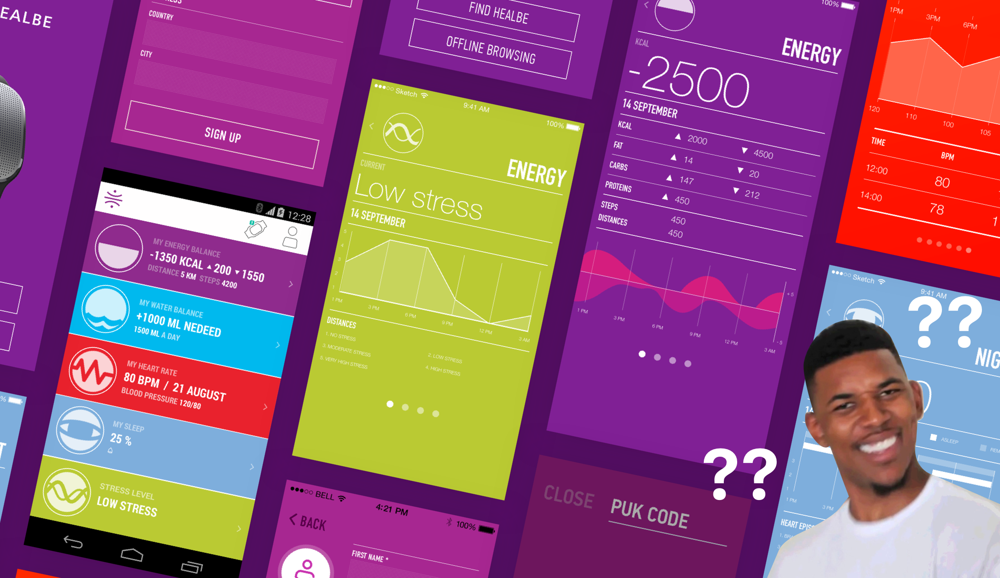
Стало: экраны, выполненные в едином стиле и состоящие из нативных системных элементов. Это позволило ускорить разработку и быстро тестровать новые фичи. Может, не столь эффектно выглядит, зато эффективнее работает.
- Создала несколько шаблонов email-рассылок для решения самых острых задач. Например, теперь людям приходят еженедельные репорты о состоянии организма за неделю.
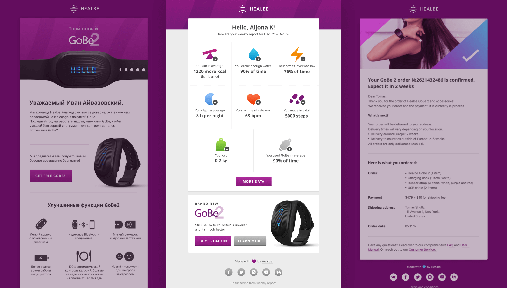
- Запустила первую версию B2B проекта: дашборда, позволяющего диетологам вести группу худеющих «пациентов» на основании данных с браслета.
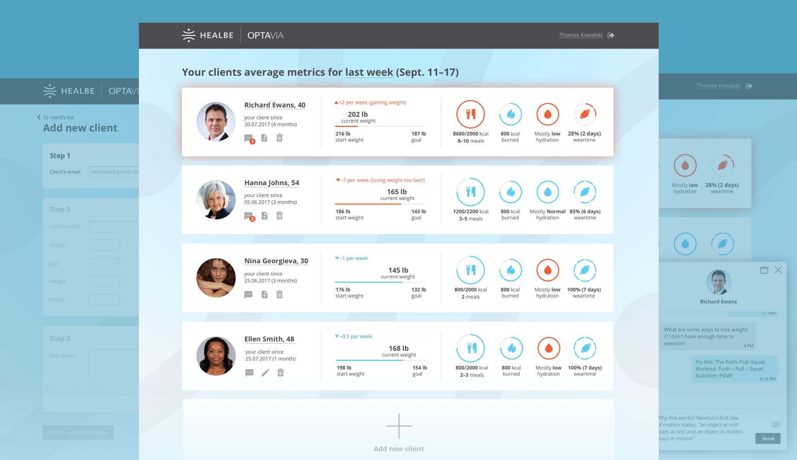
- Получала обратную связь с помощью команды техподдержки и Intercom, составляла отчеты по обратной связи для команды, чтобы понять, какие проблемы требуют быстрого реагирования.
- Ежедневно общалась с разработчиками, составляла документацию на Confluence, узнавала от них кучу нового и немножко кодила на уровне html/css. Хочу и на js научиться.
Итог: GoBe 2 назван одним из лучших проектов на CES 2017 (пруф). Сейчас хорошо продается в США, Китае и Японии. Третье поколение не за горами.
Участие в других проектах
В 19 лет запустила промо-сайт Контур.Эльбы, популярного помощника предпринимателей. И он всё ещё работает в почти первозданном виде (хотя уже и не выглядит столь современно).

В том числе проработала немалую часть внутренних интерфейсов Эльбы и поучаствовала в выпуске приложения на Android.

В паре с коллегой-дизайнером разработала приложение, с помощью которого до сих пор проводят заседания члены Евразийской экономической комиссии.
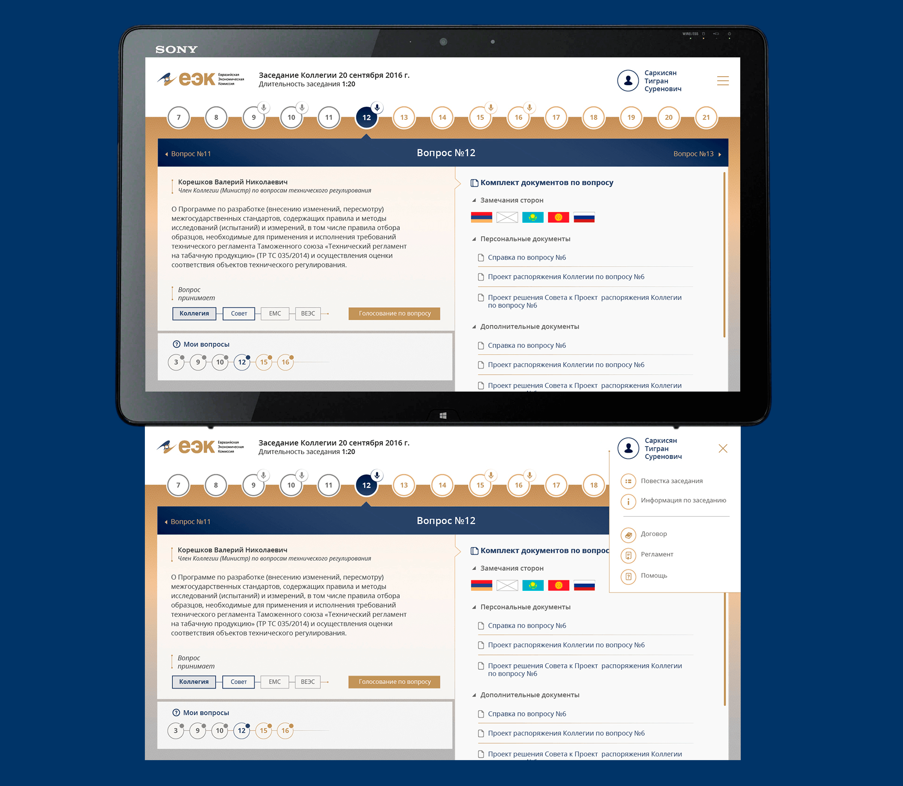
Участвовала в опенсорс-проекте по созданию алгоритма визуального поиска Velpas.
Спроектировала на заказ сервис, призванный превратить таск-менеджмент в игру. Жаль, что в итоге его забросили.
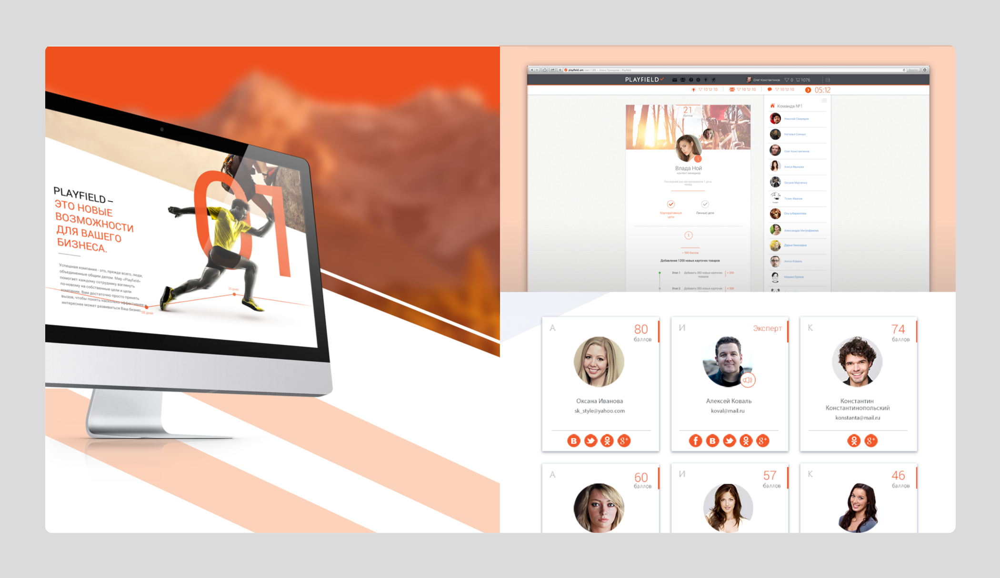
Отговорила Криптокадемию сразу же пилить сложный сайт (при существующем лэндинге), предложив вместо этого набрать аудиторию на telegram-канале и соцсетях. Оформленные мною соцсети и рассылки кипят, сайт неспешно разрабатывается в фоновом режиме.
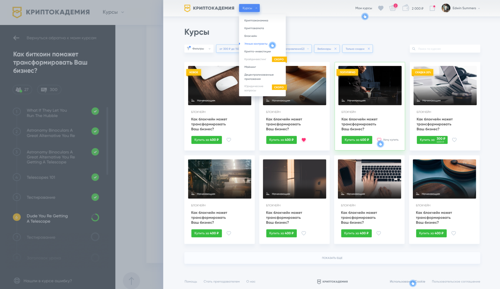
Графдизайн и иллюстрация — медитативные хобби. Для души каждый день вела проект-календарь 365 days of type. И привлекала к нему всех желающих поучаствовать.
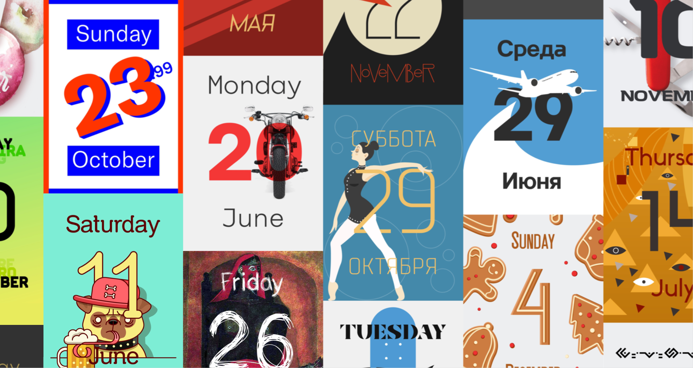
10го декабря, после годового «отпуска», возобновляю это дело в свежем формате.Тестовое задание
Дано: Амплифер, форма добавления поста.
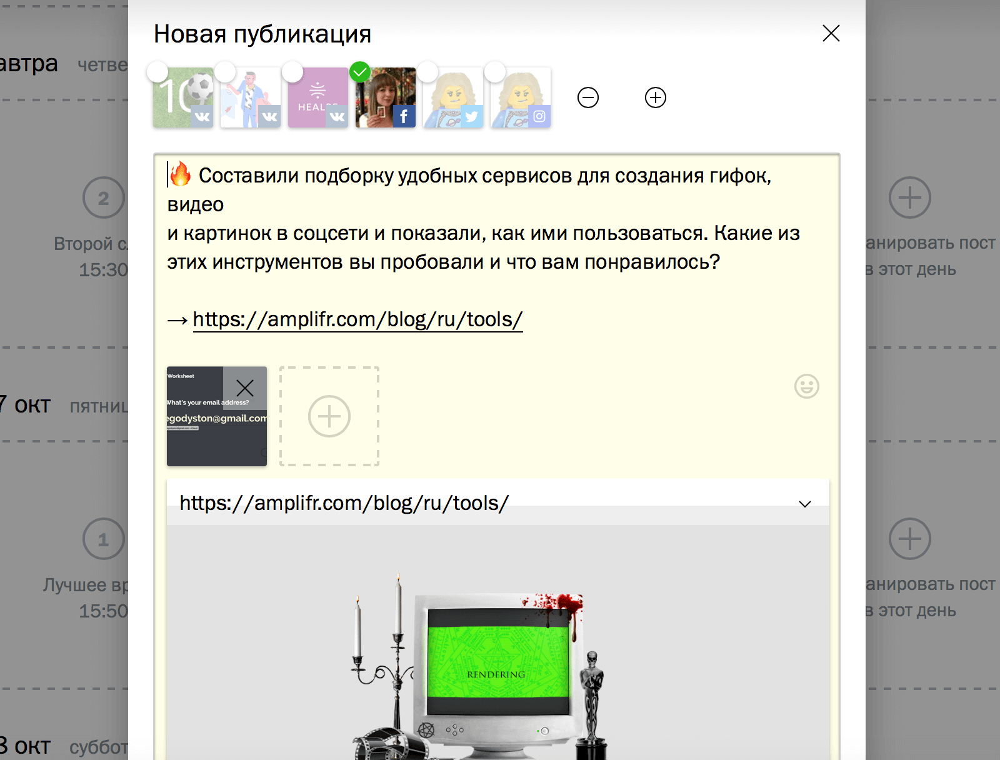
Задачи
- Сделать так, чтобы люди пользовались функцией кастомизации постов для разных соцсетей вместо создания одного поста много раз.
- Сделать ошибки валидации более заметными.
- Показать людям возможность сохранения поста в черновик.
- Подумать о функции регулярного добавления поста.
- Сделать форму проще визуально.
Решение
Cуществующая форма добавления поста вполне рабочая, но имеет один недостаток: ради визуальной компактности всё в ней смешано в одну кучу. Сначала человек выбирает соцсети, потом думает над контентом, потом снова возвращается к соцсетям, но не видит, как пост будет выглядеть в каждой из них и как исправить ошибки. Человек стоит перед широким выбором возможностей интерфейса и не знает, с чего именно начать. Кажется более простым выбрать всего один фейсбук, отредактировать пост конкретно под него и создать совсем новый — для твиттера. Что люди, согласно аналитике, и делают.
Но Амплифер создан экономить время.
Мне захотелось прибраться в форме и поэтапно «вести» по ней человека. Что есть этапы? 4 ключевых точки: контент, выбор соцсетей, редактура по требованиям и выбор времени. Первая мысль — разделить всё это дело на 4 отдельных окна, хоть и смотрелась компактно, но я быстро ее отмела. Потому что процесс публикации поста всё-таки довольно однороден и вообще скроллить куда проще, чем подносить мышь к кнопке и кликать.
В результате форма получилась одна. С последовательным заполнением этапов, которые открываются по скроллу — когда человек явно сделал что нужно и хочет идти дальше.

Порядок этапов в форме тоже не случаен. Что в процессе публикации поста является главным? Мысль, контент. В первую очередь просим добавить текст и визуальные материалы.
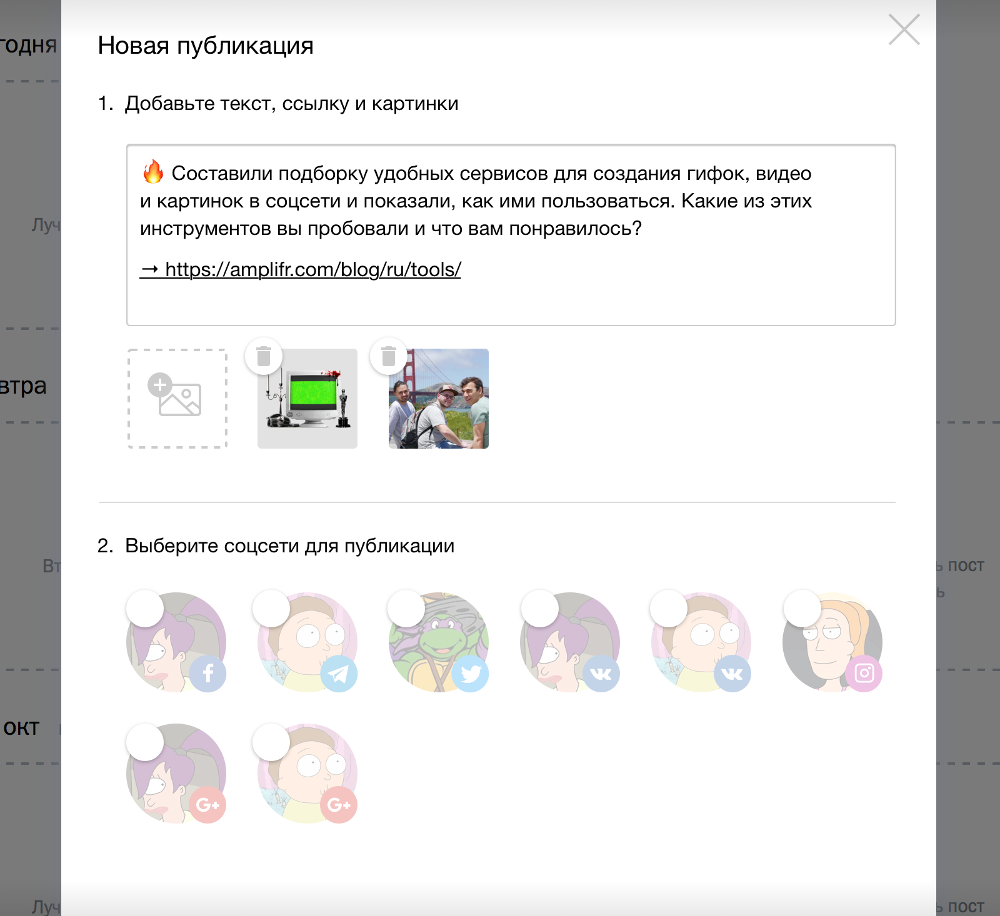
Вторым этапом выбираем странички, на которые хотим свою мысль опубликовать. Амплиферу эта информация нужна здесь и сейчас, чтобы провалидировать текст под каждую конкретную соцсеть.
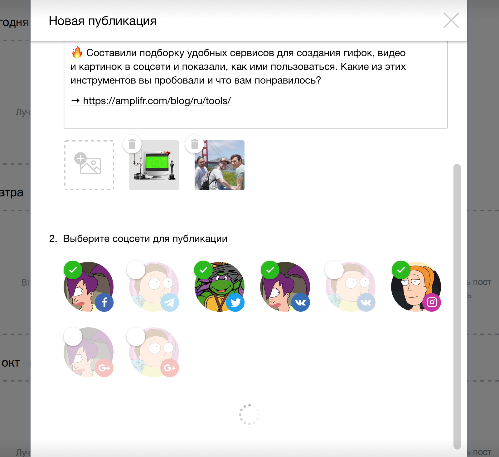
По скроллу подгружаем этап № 3, а именно статус готовности сообщения к публикации. В каких соцсетях всё уже окей, а в каких не помешает, например, сократить количество символов. Ранее незаметная валидация превращается в статус, перемещается вверх и видна наглядно.
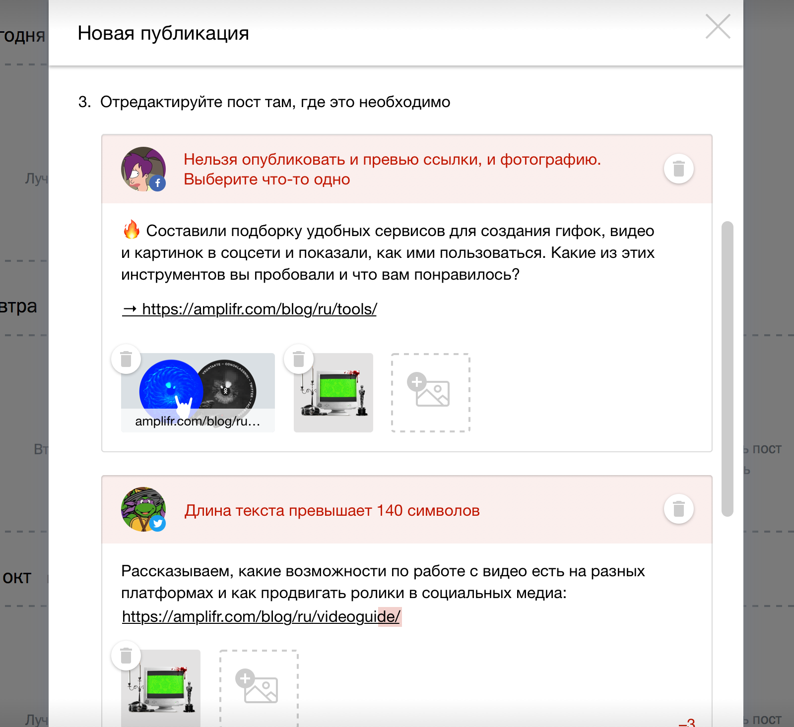
Логичный вопрос: зачем выводить тут длинную телегу из вариаций поста? Ответ: возможность редактировать один и тот же пост под любую ситуацию и аудиторию в раскрытом виде гораздо более наглядна, чем будучи спрятанной под кнопкой «Добавить отдельную версию для некоторых соцсетей».
Если содержимое поста простое и проходит валидацию для каждой выбранной соцсети: например, короткое сообщение + картинка, то 3й этап при подгрузке можно автоматически пролистывать.
Итак, все посты прошли проверку. По скроллу открывается последнее звено — выбор времени публикации. Выносим 3 главных сценария на передний план: Опубликовать сейчас, Опубликовать позже и Сохранить в черновик. Предлагаю не только кэшировать пост, если человек ушел с формы (как это делается сейчас), но и сохранять его в черновик по умолчанию. При выборе первого или второго сценария давать возможность настроить периодичность поста.
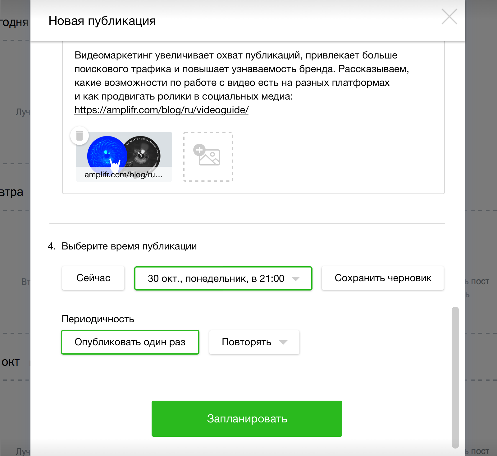
Итог: Задачи выполнены минимальными средствами без глобального перепиливания формы.
Почему Алёна хочет к Марсианам?
Потому что вы невероятно круты от продуктов до докладов на конференциях. Разделяю марсианские ценности: инженерный подход без тени субъективизма (есть лишь «нужно людям» и «не нужно», «работает» и «не работает»), интерес к технологиям, хорошая самоорганизация и независимость от геолокации. Мне кажется, так можно любые горы свернуть. Здорово, когда компания это понимает.